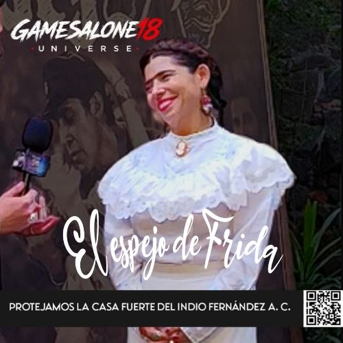

TEATRO · ENTREVISTA
El Espejo de Frida
Conversamos con Diana Carranza, autora y protagonista de una propuesta escénica que aborda la figura de Frida Kahlo mediante teatro, música en vivo, danza y distintas expresiones artísticas.
Casa Fuerte Emilio “El Indio” Fernández · Ciudad de México
COBERTURA COMPLETA PRÓXIMAMENTE